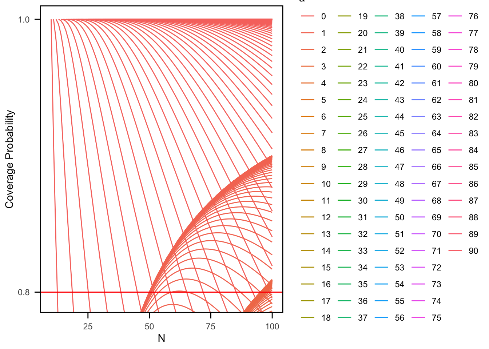

library(extraDistr)
library(tidyverse)
library(data.table)
source('../functions.R', encoding = 'UTF-8')
source('../functions_vec.R', encoding = 'UTF-8')NHG CI (N Unknown): m = 1
Set-Up
all_ac_N_unknown_vec_editted <- function(M, m, conf_level = 0.95, max_N = 1000) {
# Loop over each N from M to max_N, building a data.table for each N
results_list <- lapply(seq.int(M, max_N), function(N_val) {
max_x <- N_val - M
# If max_x is negative, skip (should not happen because N_val >= M)
if(max_x < 0) return(NULL)
# Create a grid of (a, b) pairs with 0 <= a <= b <= max_x.
# CJ() creates the complete join (all combinations) and sorts by default.
grid <- CJ(a = 0:max_x, b = 0:max_x)[b >= a]
# Compute the coverage probability for each (a, b) pair.
# (If sum_ngh_pmf can be vectorized over a and b, you could replace mapply with a direct call.)
grid[, coverage_prob := mapply(function(a, b) sum_ngh_pmf(N_val, M, m, a, b), a, b)]
grid[, cardinality := b - a + 1]
grid[, N := N_val]
# Filter rows based on the coverage criteria
#grid <- grid[coverage_prob >= conf_level & coverage_prob <= 1 & coverage_prob >= 0]
grid <- grid[coverage_prob <= 1 & coverage_prob >= 0]
# If no rows pass the filter, return NULL so nothing is added.
if (nrow(grid) == 0) return(NULL)
return(grid)
})
# Combine the results from all N values
combined <- rbindlist(results_list, use.names = TRUE, fill = TRUE)
# If no valid rows were found, return an empty data frame with the expected structure.
if (nrow(combined) == 0) {
return(data.frame(
N = integer(),
a = integer(),
b = integer(),
cardinality = integer(),
coverage_prob = numeric(),
x_set = character(),
stringsAsFactors = FALSE
))
}
# Add the x_set column exactly as before.
combined[, x_set := paste(a, b, sep = "-")]
# Reorder the columns to match the original order: N, a, b, cardinality, coverage_prob, x_set
setcolorder(combined, c("N", "a", "b", "cardinality", "coverage_prob", "x_set"))
# Return as a data.frame to preserve the original output type.
return(as.data.frame(combined))
}Discoveries (N unknown: m = 1)
For the 3 minimal cardinality methods (CG, MST, and BK), all seem to not have an upper bound when m = 1 (in the acceptance curves, 0 is always included)
For the 3 minimal cardinality methods, the acceptance curves are identical no matter the M or confidence level
All Acceptance Curves
Sys.time()[1] "2025-04-05 21:14:56 PDT"ac <- all_ac_N_unknown_vec_editted(M = 10, m = 1, conf_level = 0.80, max_N = 100)
Sys.time()[1] "2025-04-05 21:14:59 PDT"Plot
ac$a <- factor(ac$a)
ac %>%
ggplot() +
geom_line(aes(x = N,
y = coverage_prob,
group = x_set,
color = a)) +
labs(x = "N", y = "Coverage Probability") +
geom_hline(yintercept = 0.80, color = "red") +
coord_cartesian(ylim = c(0.80 - 0.005, 1)) +
scale_y_continuous(breaks = c(0.80, 1)) +
theme_minimal() +
theme(
#legend.position = "none",
panel.grid.major = element_blank(),
panel.grid.minor = element_blank(),
panel.border = element_rect(color = "black", fill = NA, size = 1),
axis.ticks = element_line(size = 0.5),
axis.ticks.length = unit(2, "mm"),
axis.text.x = element_text(margin = margin(t = 5)),
axis.text.y = element_text(margin = margin(r = 5)))Warning: The `size` argument of `element_line()` is deprecated as of ggplot2 3.4.0.
ℹ Please use the `linewidth` argument instead.Warning: The `size` argument of `element_rect()` is deprecated as of ggplot2 3.4.0.
ℹ Please use the `linewidth` argument instead.
CG!
Sys.time()[1] "2025-04-05 21:15:01 PDT"cg_ac <- cg_ac_N_unknown_direct(M = 10, m = 1, conf_level = 0.80, max_N = 500)
Sys.time()[1] "2025-04-05 21:15:07 PDT"Sys.time()[1] "2025-04-05 21:15:07 PDT"minimal_cardinality_ci_N_unkown_vec(M = 10, m = 1, conf_level = 0.80, max_N = 500,
procedure = "CG") x ci_lb ci_ub ci
1 0 10 500 [10, 500]Sys.time()[1] "2025-04-05 21:15:13 PDT"ac$a <- factor(ac$a)
ac %>%
filter(x_set %in% unique(cg_ac$x_set)) %>%
ggplot() +
geom_line(aes(x = N,
y = coverage_prob,
group = x_set)) +
labs(x = "N", y = "Coverage Probability") +
geom_hline(yintercept = 0.80, color = "red") +
coord_cartesian(ylim = c(0.80 - 0.005, 1)) +
scale_y_continuous(breaks = c(0.80, 1)) +
theme_minimal() +
theme(
#legend.position = "none",
panel.grid.major = element_blank(),
panel.grid.minor = element_blank(),
panel.border = element_rect(color = "black", fill = NA, size = 1),
axis.ticks = element_line(size = 0.5),
axis.ticks.length = unit(2, "mm"),
axis.text.x = element_text(margin = margin(t = 5)),
axis.text.y = element_text(margin = margin(r = 5)))MST!
Sys.time()[1] "2025-04-05 21:15:14 PDT"mst_ac <- mst_ac_N_unknown_direct(M = 10, m = 1, conf_level = 0.80, max_N = 500)
Sys.time()[1] "2025-04-05 21:15:21 PDT"Sys.time()[1] "2025-04-05 21:15:21 PDT"minimal_cardinality_ci_N_unkown_vec(M = 10, m = 1, conf_level = 0.80, max_N = 500,
procedure = "MST") x ci_lb ci_ub ci
1 0 10 500 [10, 500]Sys.time()[1] "2025-04-05 21:15:27 PDT"BK!
Sys.time()[1] "2025-04-05 21:15:27 PDT"bk_ac <- bk_ac_N_unknown_direct(M = 10, m = 1, conf_level = 0.80, max_N = 500)
Sys.time()[1] "2025-04-05 21:15:33 PDT"Sys.time()[1] "2025-04-05 21:15:33 PDT"minimal_cardinality_ci_N_unkown_vec(M = 10, m = 1, conf_level = 0.80, max_N = 500,
procedure = "BK") x ci_lb ci_ub ci
1 0 10 500 [10, 500]Sys.time()[1] "2025-04-05 21:15:39 PDT"CMC
Sys.time()[1] "2025-04-05 21:15:39 PDT"cmc_ci_N_unkown_vec(M = 10, m = 1, conf_level = 0.80, max_N = 200) x ci_lb ci_ub ci
1 0 10 49 [10, 49]
2 1 13 95 [13, 95]
3 2 19 140 [19, 140]
4 3 26 185 [26, 185]Sys.time()[1] "2025-04-05 21:15:46 PDT"Blaker
Sys.time()[1] "2025-04-05 21:15:46 PDT"blaker_ci_N_unkown_vec(M = 10, m = 1, conf_level = 0.80, max_N = 200) x ci_lb ci_ub ci
1 0 10 97 [10, 97]
2 1 13 194 [13, 194]Sys.time()[1] "2025-04-05 21:15:47 PDT"Analog to Clopper-Pearson
Sys.time()[1] "2025-04-05 21:15:47 PDT"CI_Analog_CP_N_Unknown_vec(M = 10, m = 1, conf_level = 0.80, max_N = 200) x lower_bound upper_bound
1 0 10 100
2 1 12 195Sys.time()[1] "2025-04-05 21:15:47 PDT"